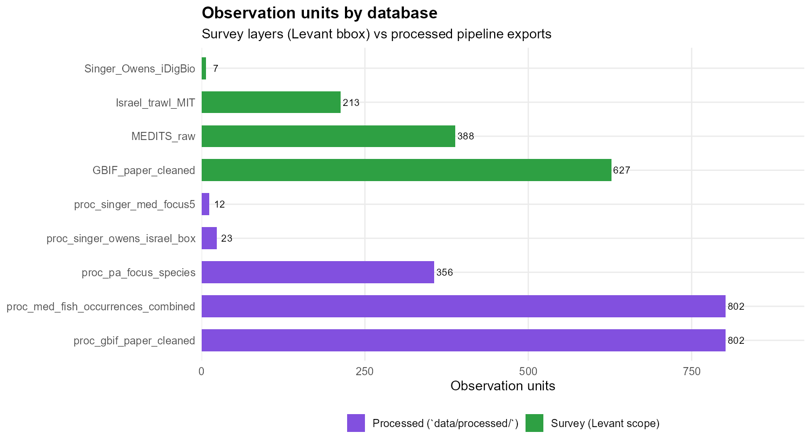
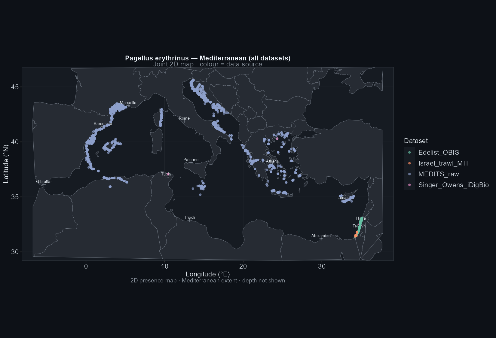
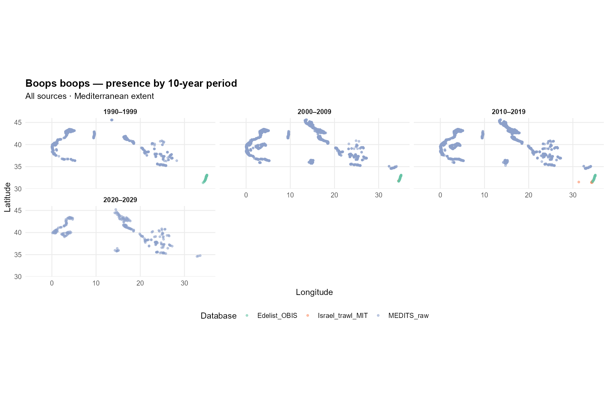
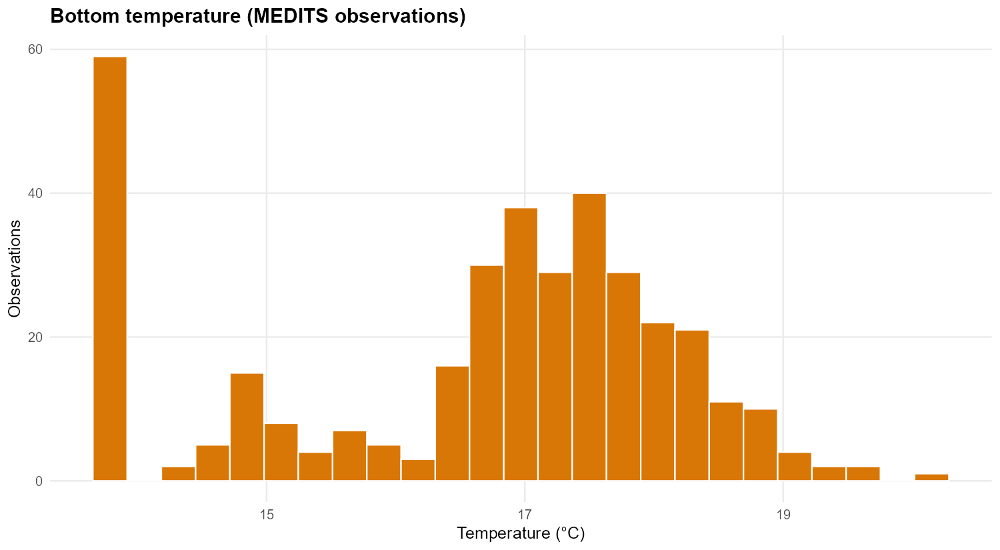
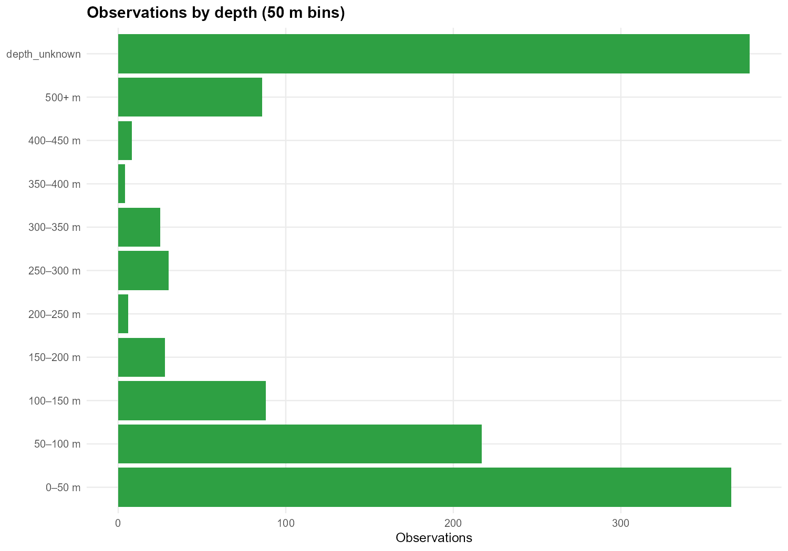

1. How many observations?
Survey units: haul/station (obs_key), Singer & Owens voucher, or
GBIF present rows from gbif_fish_levant_cleaned.csv (01 pipeline: bbox + CoordinateCleaner).
Processed exports listed separately; not in survey KPIs.
1,235Survey observation units
89,700Sightings on survey units
4Survey databases
1,995Processed export rows
| Layer | Database | Observations | Sightings |
|---|---|---|---|
| Processed (`data/processed/`) | proc_gbif_paper_cleaned | 802 | 802 |
| Processed (`data/processed/`) | proc_med_fish_occurrences_combined | 802 | 802 |
| Processed (`data/processed/`) | proc_pa_focus_species | 356 | 356 |
| Processed (`data/processed/`) | proc_singer_owens_israel_box | 23 | 23 |
| Processed (`data/processed/`) | proc_singer_med_focus5 | 12 | 12 |
| Survey (Levant scope) | GBIF_paper_cleaned | 627 | 627 |
| Survey (Levant scope) | MEDITS_raw | 388 | 388 |
| Survey (Levant scope) | Israel_trawl_MIT | 213 | 88,662 |
| Survey (Levant scope) | Singer_Owens_iDigBio | 7 | 23 |

2. Focus species — Mediterranean 2D maps
Maps from 04_med_2d_maps.R: all sources, panels, or
survey presence–absence (MIT + Edelist + MEDITS; no GBIF/Singer).

3. Boops boops (בקלה) — presence by time period
By era (all sources or surveys only) or joint survey presence–absence
(MIT + Edelist + MEDITS; excludes GBIF & Singer). Maps from 04_med_2d_maps.R.

4. Bottom temperature
Bottom temperature (°C) available for 363 of 1235 observations (MEDITS hauls only). Values ≤0 are missing (MEDITS uses −1 as placeholder).

5. Distribution by depth
Median depth per observation; 50 m bins.
